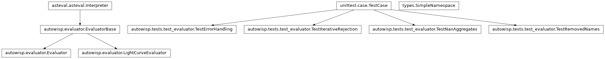
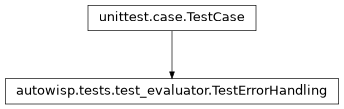
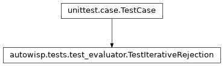
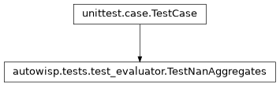
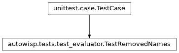

autowisp.tests.test_evaluator module
Class Inheritance Diagram

Tests for the symbol table every AutoWISP expression is evaluated in.
Evaluator and LightCurveEvaluator are siblings deriving from
EvaluatorBase, and roughly two dozen modules build one. What they offer
is therefore worth pinning in one place: the names AutoWISP adds, the names
it takes away, and what happens to a bad expression.
- class autowisp.tests.test_evaluator.TestErrorHandling(methodName='runTest')[source]
Bases:
TestCase
A bad expression raises rather than evaluating to
None.
- class autowisp.tests.test_evaluator.TestIterativeRejection(methodName='runTest')[source]
Bases:
TestCase
The iterative-rejection fits cope with NaN-padded input.
Diagnostics are NaN-padded onto the full image list, so a missing value is the usual case rather than an exception. A NaN in the dependent variable is left out of the fit but still gets a prediction; a NaN in the independent one has nothing to predict at.
- _noisy_sine()[source]
Return x, y, and the truth: noisy with outliers and NaNs.
The noise (0.05) comes from
RandomStatebecause its stream is frozen, while aGenerator’s may change between numpy versions. The outliers are 200 times the noise so that failing to reject them is unmistakable.
- test_average_ignores_nan_and_rejects_outlier()[source]
With
nanmean, only rejection keeps the outlier out.
- test_polynomial_fit_with_too_few_points_is_nan()[source]
Fewer finite points than coefficients gives no fit at all.
Rather than the minimum-norm solution
lstsqwould return, which would plot as a line through nothing.
- test_smoothing_spline_rejects_outliers()[source]
The result does not depend on how loose the initial
sis.It only has to be loose enough for the spline not to bend to the outliers. Over 200 noise seeds, the largest error is at most 0.12, against at least 1.0 without rejection (see the next test).
- test_smoothing_spline_without_iterations()[source]
max_iterations=0is a single fit, rejecting nothing.Smoothing enough to leave the outliers alone flattens the sine.
- test_threshold_pair()[source]
A signed pair rejects above and below separately, in any order.
The outlier above the line (at 4) is rejected; the one below it (at 9) is well within the negative threshold, so it stays and pulls the fit. Two thresholds of the same sign are refused rather than guessed at.
- class autowisp.tests.test_evaluator.TestNanAggregates(methodName='runTest')[source]
Bases:
TestCase
The NaN-ignoring aggregates are available and are numpy’s.
- test_a_missing_numpy_name_would_fail_loudly()[source]
The list is explicit so that numpy dropping one is an error.
- test_bound_to_the_numpy_functions()[source]
A name resolving to something else would be worse than absent.
- class autowisp.tests.test_evaluator.TestRemovedNames(methodName='runTest')[source]
Bases:
TestCase
Names asteval offers that AutoWISP takes away.